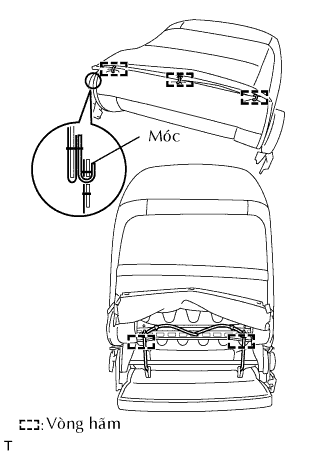

CỤM GHẾ TRƯỚC > LẮP RÁP |
| 1. LẮP BẢO VỆ MÉP NGOÀI CỦA NỆM LẮP GHẾ TRƯỚC TRÁI |
| 2. LẮP TAY ĐIỀU CHỈNH NGẢ GHẾ DƯỚI BÊN TRÁI |
 |
w/ Bộ điều chỉnh thẳng đứng:
Dùng khẩu hoa khế T40, lắp tay điều chỉnh bằng 2 bulông.
 |
w/o Bộ điều chỉnh thẳng đứng:
Lắp tay điều chỉnh bằng 3 bu lông.
| 3. LẮP TAY ĐIỀU CHỈNH NGẢ GHẾ DƯỚI BÊN PHẢI |
| 4. LẮP THANH BỘ ĐIỀU CHỈNH GHẾ TRƯỚC (w/ Bộ điều chỉnh thẳng đứng) |
Lắp thanh điều chỉnh bằng 2 bu lông.
| 5. LẮP TAY ĐIỀU CHỈNH TRƯỢT GHẾ |
Gắn các lò xo để lắp tay nắm theo thứ tự được chỉ ra trên hình vẽ.
| 6. LẮP TRỤC ĐIỀU CHỈNH THẲNG ĐỨNG (w/ Bộ điều chỉnh thẳng đứng) |
Lắp trục điều chỉnh vào tay điều chỉnh nghiêng ghế bằng 2 phanh hãm chữ E.
 |
Lắp tạm núm bộ điều chỉnh ghế thẳng đứng.
Xoay núm càng nhiều càng tốt theo hướng như được chỉ ra bởi mũi tên A trong hình vẽ.
Lắp bánh răng của trục điều chỉnh. Sau đó, gióng thẳng các lỗ của trục điều chỉnh và tay điều chỉnh bằng cách vặn núm theo chiều được chỉ ra bởi mũi tên B trong hình vẽ.
Tháo núm bộ điều chỉnh ghế thẳng đứng.
Lắp lò xo ghế như trên hình vẽ.
Dùng kìm, đẩy tai giữ lò xo.
Lắp chốt bộ điều chỉnh ghế trước.
| 7. LẮP KHUNG NỆM GHẾ TRƯỚC TRÁI |
Lắp khung nệm ghế bằng 4 bu lông.
| 8. LẮP BỌC NỆM GHẾ TRƯỚC |
Dùng kìm mỏ quạ, lắp bọc nệm ghế vào lót nệm ghế bằng 6 vòng hãm mới.
Lắp 2 cái bảo vệ phía trước mép nệm ghế trước vào khung nệm ghế.
Lắp bọc nệm ghế vào khung nệm ghế.
Dùng kìm mỏ quạ, kẹp 7 vòng hãm mới.
Cài các móc vào vùng móc trong hình vẽ.
Cài khớp 2 móc.
| 9. LẮP LÒ XO LƯNG GHẾ |
| 10. LẮP BỌC LƯNG GHẾ TRƯỚC |
Dùng kìm mỏ quạ, lắp bọc lưng ghế vào lót lưng ghế bằng 4 vòng hãm mới.
Lắp bọc nệm ghế vào lò xo lưng ghế.
 |
Cài khớp 4 vấu để lắp 2 thanh đỡ tựa đầu.
|  |
Dùng kìm mỏ quạ, lắp 5 vòng hãm mới.
Cài khớp móc.
| 11. LẮP CỤM LƯNG GHẾ TRƯỚC |
 |
Lắp lưng ghế bằng 4 bu lông.
| 12. LẮP BỌC BÊN TRONG NỆM GHẾ GHẾ TRƯỚC TRÁI |
Lắp bọc bên trong theo thứ tự như được chỉ ra trong hình vẽ.
Lắp bọc bên trong bằng 2 vít.
| 13. LẮP CỤM ĐAI TRONG GHẾ TRƯỚC (cho Người lái) |
Lắp nắp khóa cài trên đai an toàn.
Cài khớp dây điện vào kẹp.
Lắp đai an toàn bằng đai ốc.
 |
Cài khớp kẹp như trong hình vẽ.
| 14. LẮP CỤM ĐAI TRONG GHẾ TRƯỚC (Cho Phía Hành khách trước) |
 |
Lắp nắp khóa cài trên đai trong.
Lắp đai an toàn bằng đai ốc.
| 15. LẮP BỌC NỆM GHẾ TRƯỚC TRÁI |
Gắn phần sau của bọc nệm ghế theo thứ tự chỉ ra trên hình vẽ để cài vấu và lắp bọc nệm ghế.
Lắp bọc nệm ghế bằng 2 vít.
| 16. LẮP TAY CẦM NHẢ BỘ ĐIỀU CHỈNH NGHIÊNG GHẾ TRÁI |
Lắp cần nhả ghế.
| 17. LẮP NÚM ĐIỀU CHỈNH GHẾ THẲNG ĐỨNG BÊN TRÁI (w/ Bộ điều chỉnh thẳng đứng) |
Lắp núm bằng phanh hãm.